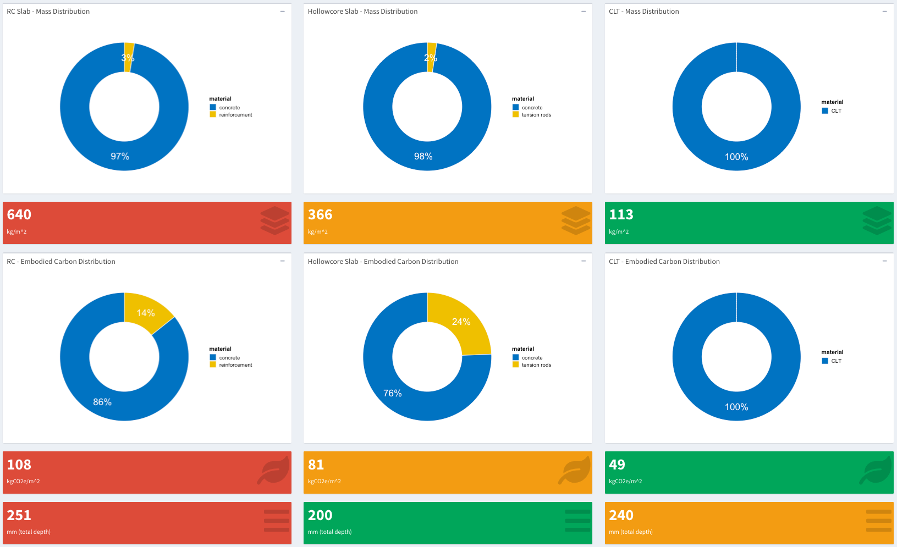
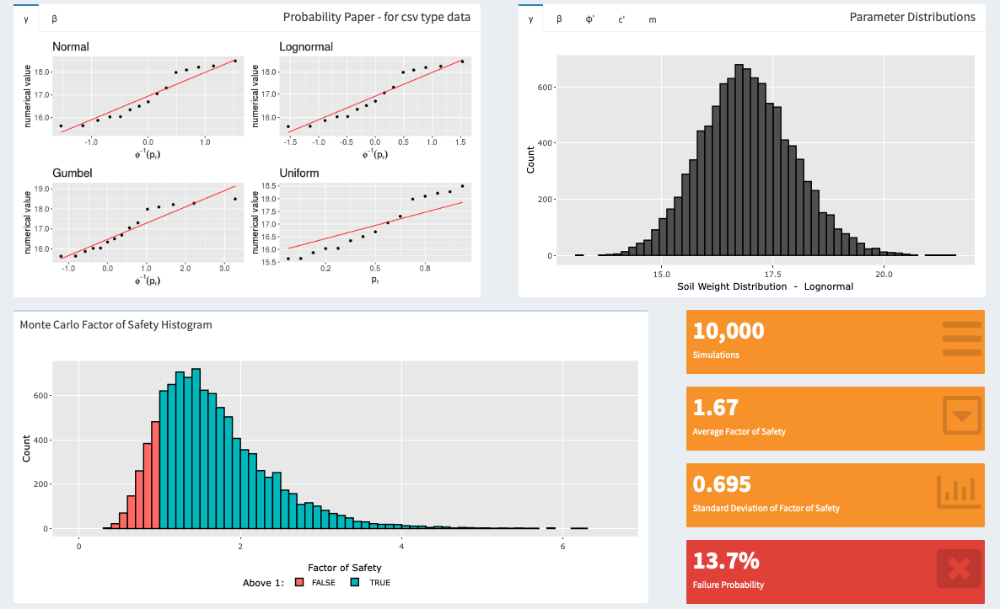
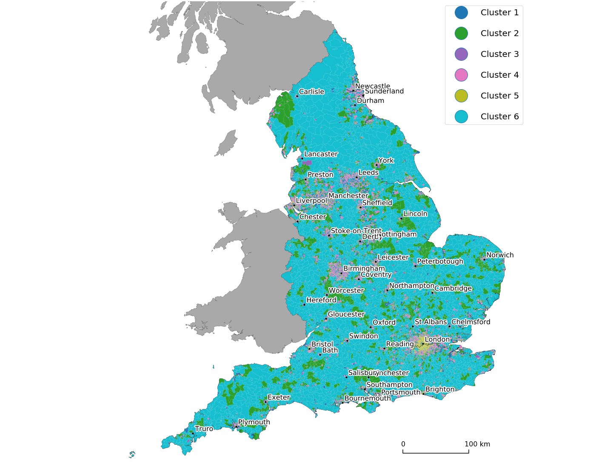
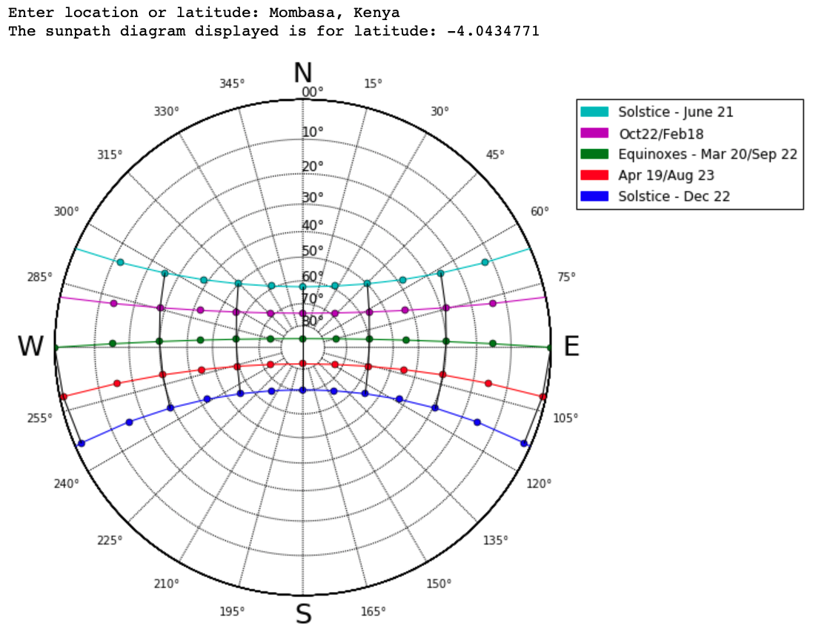

I am a passionate software engineer currnetly pursuing an MSc in Computing Science at Imperial College London.
Below are my personal projects that I have worked on during my undergraduate degree in Civil Engineering. As part of my masters degree
I am currently developing my skills and knowledge on the topics such as databases, object oriented programming in C++, computer architecture
and operating systems.

This is not just a tool for sturctural slab elements sizing. The project is designed to highlight differences in mass,
depth and embodied carbon associated with each slab type, which could inform the designer at the very early stages of a project.

This project has been designed as part of a coursework at University of Bath to assess an infinite slope stability using the Monte Carlo approach.
The project built in R and deployed on shinyapps.io servers provides great flexibility for the input parameters.

For my final year thesis I investigated various widely available clustering methods and dimensionality reduction methods available
for classification of land use. The data based on which clustering was done inclued a number of geographical and socio-economic variables.
For more details please see full manuscript on my GitHub page.

This is a python code that was written to automate drawing of a Sun Path Diagram, by taking an input from the user in the
form of any location on earth or a latitude. Sun Path Diagrams are commonly used in the building environment industry, for
designers to assess the shading movement throughout hours and days of the year.